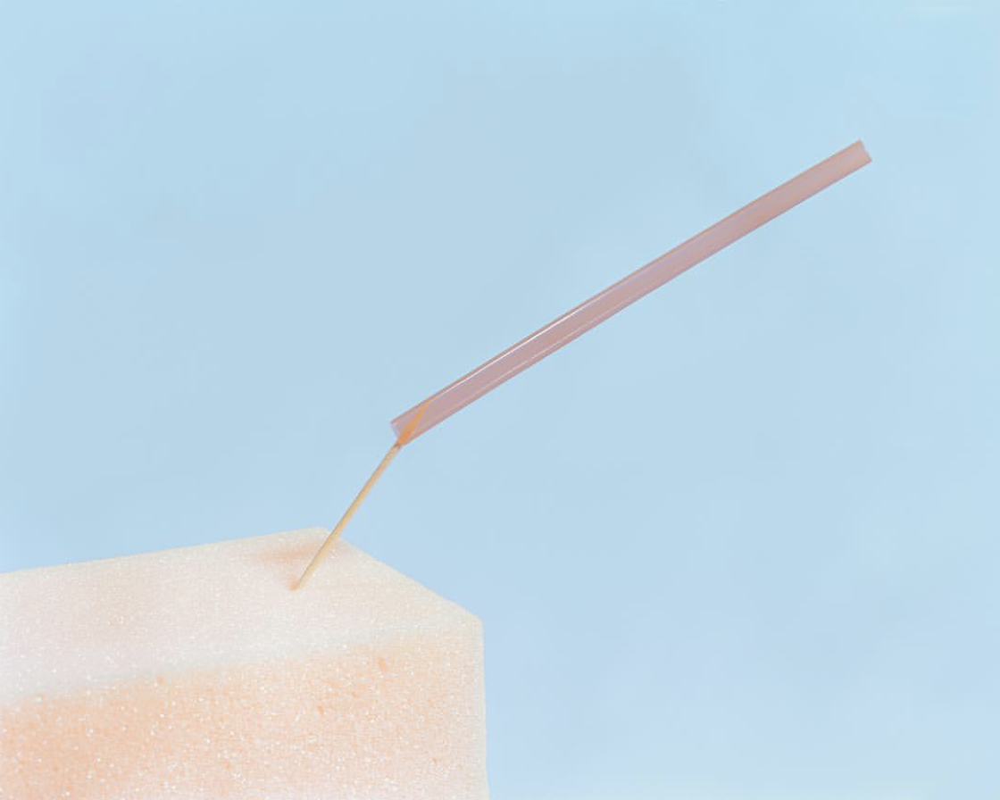
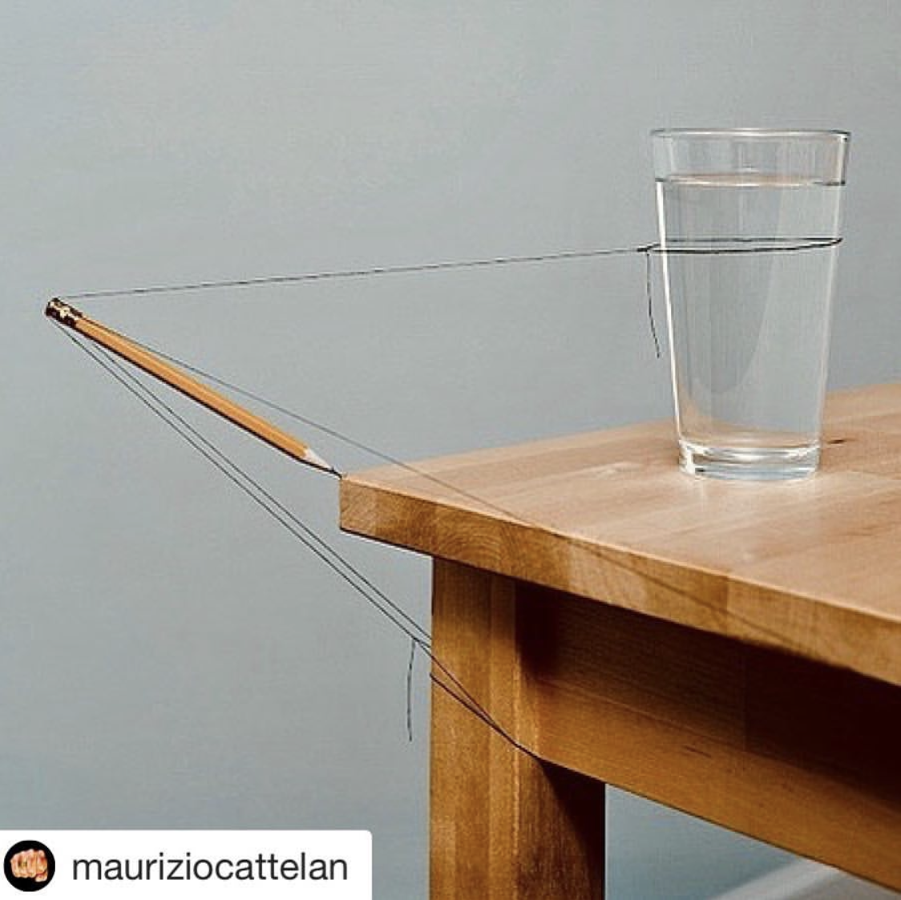
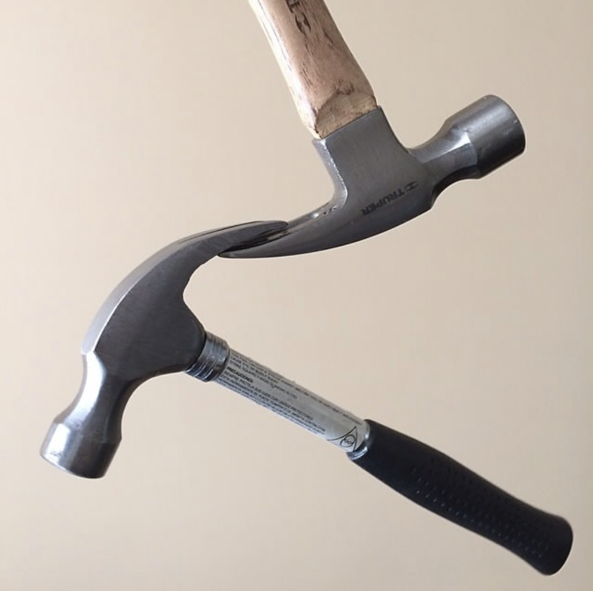
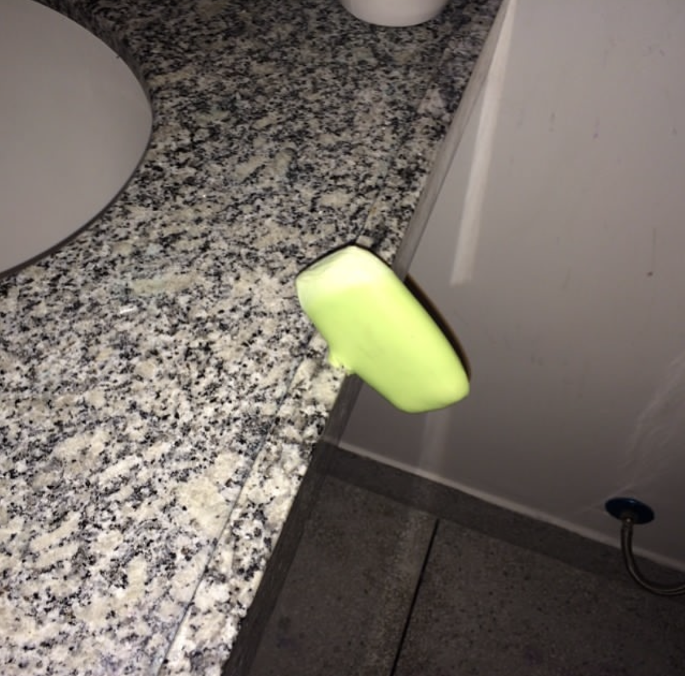

Introduction
Write a short introduction, a short paragraph, giving a bit more detail about what the project is.
Concept and Background Research
In this work, the question of "will the balloon burst or not" becomes a hint and a question in the viewer's mind, and in order to explore the installation, they need to keep moving in front of the camera to trigger the slider to move the needle. Everything is peaceful until the installation reaches the tipping point, which is the moment when the needle is about to pierce the balloon, and everything is fine, whether it's the balloon or the needle or the audience. But, as things often do, it's when you realise that the balance could break down and everything could collapse in the next second that people start to get nervous. Just like a series of social and environmental changes, human beings have the ability to control things but don't care too much after they seem calm and risk-free, but suddenly start to panic when they anticipate that a huge change is coming in front of them.
   I was inspired by the artist Mauricio Alejo, whose photographs show an atmosphere of tension and breath-holding, because the objects and elements in his images have a danger that I call a 'tipping point', so I thought my work could have a similar atmosphere.
Technical Implementation

In my project, the code in p5js takes on a computational role without acting as any visual element in the work, and is invisible to the audience when exhibited. This code calculates the relative movement between each frame captured by the camera, so that it can calculate whether the person has gone to the left or to the right. At this point, two conditions are created, the Arduino sends the signal "forward" or "backward" to the slider and the motor driver drives the stepper motor. The needle, which is fixed to the slider, moves towards the balloon.

Reflection and Future Development
In terms of detecting the direction of movement of the audience, the code performs well with a single person and is relatively stable, but if the background keeps moving, or if more than one people appear in the frame, the data becomes unstable. Also, it would be better if it ended with "the balloon will eventually be punctured", but this would create a problem in the exhibition, as new balloons would need to be replenished in time, and I have not yet created a part of the installation that would automatically fill up and replace a new balloon, so if I have the chance to improve it in the future, I would like the installation to be able to have an air pump at the bottom of the balloon when it breaks. When a balloon breaks, the air pump at the bottom can blow out a new one.
References
- Nema23 stepper motor and TB6600 Arduino (quick tutorial for beginners) (2020) YouTube. YouTube. Available at: https://www.youtube.com/watch?v=FggSRQqB_a4&list=PL7X8lmrvgNHZTSjaIxUHViNZsAYUps23I&index=2 (Accessed: May 6, 2023).
- Conceptual Reference example. Include link where possible.